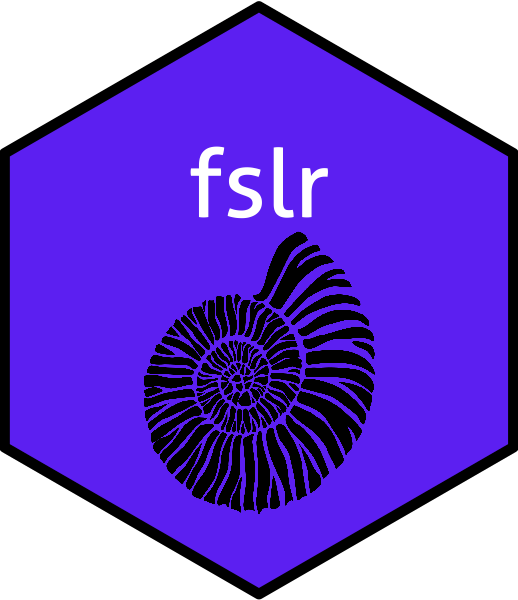
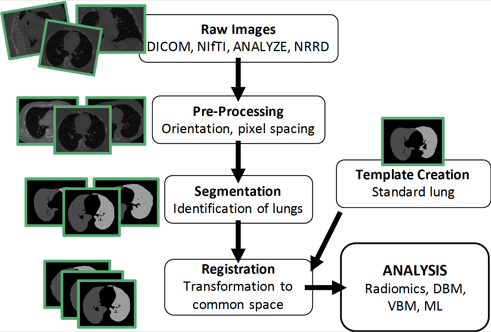
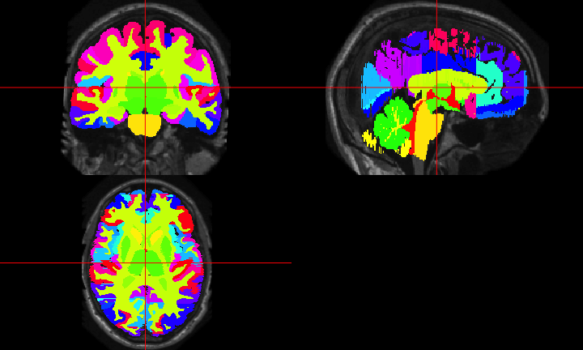

R is a language and environment
for statistical computing
and graphics.
https://cran.r-project.org/
R is much more than that now, but…
What did R have for medical imaging?

https://imgflip.com/memegenerator/Grandma-Finds-The-Internet
What did R have for medical imaging?

What did R have for medical imaging?

Workflow for an Analysis
- bash

- FSL

- ANTs

- MRIcroGL

- OsiriX

- SPM 12


Workflow for an Analysis
Multiple pieces of software used
- all different syntax
Our Goal:
Lower the bar to entry
- all “one” code (
R)- pipeline tool
- also “native”
Rcode
Complete pipeline
- preprocessing and analysis

Envy: Bioconductor

- centralized bioinformatics packages (> 1300)
- large community/developer team
- published tutorials and workflows
- additional requirements to CRAN (e.g. packages need vignettes)

An R Platform for
Medical Imaging Analysis
What is Neuroconductor?
- A centralized repository of packages (N = 97)
- A community of developers (N = 26) and users
- A website https://neuroconductor.org/.
- with tutorials and help
- A team helping developers and users (John, Adi Gherman, Ciprian Crainiceanu, Brian Caffo)
Benefits of Neuroconductor
Allow imaging to use all R has to offer:
- Statistics and Machine Learning (
tensorflow) - Versioning and testing (
GitHub) - Reproducible reports and analyses
- Shiny (web applications)
- Genomics/Imaging analysis in one platform
- Bioconductor
Goal: Centralize the packages (currently 97)

New release (December 2019)

Using R as a Pipeline Tool: fslr 
fslr- call FSL from R (requires FSL)

ichseg: ICH Segmentation of CT images 
ichseg::ich_segment(img = "/path/to/ct/scan")

lungct: Analysis of Lung CT Scans 

Development Pipeline:
Check the package for stability
- check against other imaging software (e.g. FSL)

Neuroconductor Goal:
Detailed tutorials on how to actually perform an analysis

Some (Unpopular) Opinions
- No code = no method…yet “Available upon request” - not sufficient
- We are not the leaders in imaging
- Not everyone cares about our methods
- Many engineers are better in imaging at a) distributing code and b) selling their method
- Most Academics (& depts) don’t really support it well.
Helping Developers
- GitHub allows the Neuroconductor team to help fix issues
- Pull Requests to developers
- Standardized checking of Packages (Travis configuration)
- Remove unnecessary hurdles for developers

Questions?
Email: 
Funding: NIH 2R01NS060910 and U24HG010263
Training we are providing
Coursera Course: Introduction to Neurohacking In R
RNifti and RNiftyReg
- provides lightweight objects as C++ pointers (fast operations)
- Registration of Images
- Wrapped in Rcpp: Works on all platforms
ANTsR
Based on ANTs: Advanced Normalization Tools
- State-of-the-art image processing pipelines
- Built at UPenn under Brian Avants
- Group has won challenges for imaging analysis
- Still actively maintained and developed
- Depends on the Insight ToolKit (ITK) medical image processing library
neurohcp: Human Connectome Project
- Allows you to download data from Human Connectome Project
- The 1200 Subjects release: behavioral and 3T MR imaging data from 1206 healthy young adult participants. Standardized protocol.
- Tutorial: http://johnmuschelli.com/neuroc/neurohcp
rcamino: Port of Camino Software
- Wraps Camino Diffusion MRI Toolkit
- Takes in b-values, b-vectors, and tensors
- Fits models for DTI data
- http://johnmuschelli.com/neuroc/DTI_analysis_rcamino/index.html
malf.templates: Segmented T1-weighted Images
- Data from the MICCAI 2012 Challenge on Multi-atlas Labelling Data
- From OASIS project and the labeled data as provided by Neuromorphometrics, Inc. (http://Neuromorphometrics.com/)

MALF: Skull Stripping Example
From (Doshi et al. 2013):

- Register templates to an subject T1
- Apply transformation to the label/mask, average over voxels
- there are “smarter” (e.g. weighted) ways
Doshi, Jimit, Guray Erus, Yangming Ou, Bilwaj Gaonkar, and Christos Davatzikos. 2013. “Multi-Atlas Skull-Stripping.” Academic Radiology 20 (12): 1566–76.